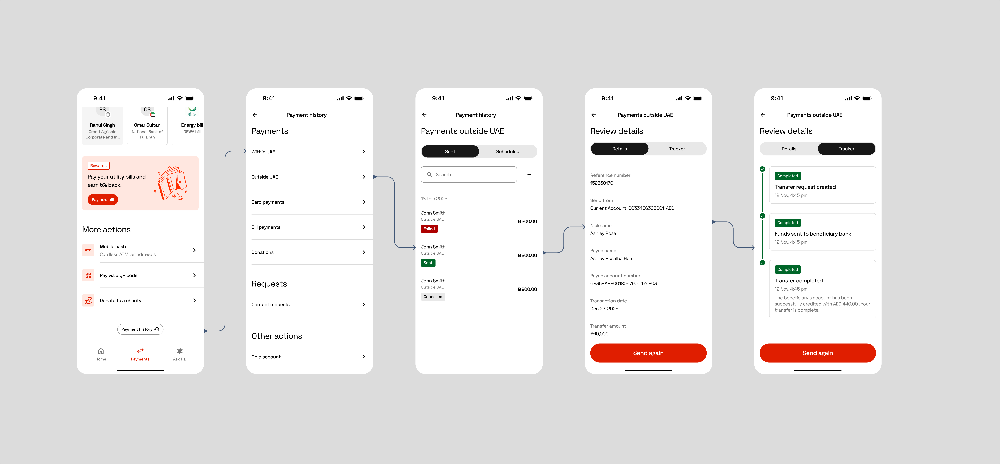

Where's my money?
Every bank in the world had to adopt SWIFT's new messaging standard — the MT→MX migration. Most treated it as invisible technical work. But the new messages carried rich status data, and we used it to give customers a live, step-by-step view of where their money is.
A mandatory migration, turned into a feature customers can see


Where it all started
Send money out of the country and it vanished. For hours or days it moved through the SWIFT network with no signal to the person who sent it, and the app answered with a single word: pending.
“Where is my transfer?” became a recurring, measurable share of support contacts. People weren't calling because something had gone wrong. They were calling because they couldn't tell whether it had.
What I was solving for
Put a clear, living answer to “where is my money right now?” inside the app — honest even when a transfer fails — so people don't have to phone in to feel safe.
Two signals would tell us it's working
- Tracker engagement: how often customers open the Tracker instead of calling
- Support deflection: fewer “where is my transfer?” contacts after launch
“The MT→MX migration was a compliance mandate. It was also, quietly, the raw material for a trust feature no one had thought to build.”
The reframe behind the project
How I approached it
Two shifts made it possible: the move to ISO 20022 meant payment messages now carried rich, structured status end to end, and a design-system refresh gave license to rebuild rather than patch. I started by cataloguing every state a transfer can occupy — including the failure and reversal branches banks usually hide — and made that map the single source of truth for design, engineering, and QA.
The journey
A transfer isn't one event — it's a journey through many states, and the hard part of a tracker isn't the happy path, it's everything else. Every status earned a name, a plain-language description, a badge, and a defined next step.
Transfer started
The request is in, the journey begins.
Checking your transfer
Screening and validation in progress.
Transfer approved / Transfer declined
The first branch: cleared to proceed, or stopped here.
Sending your money / Money not sent
Funds leaving the account, or a failure before they do.
Money sent to payee's bank
Handed off across the SWIFT network.
Cash ready for collection → Cash collected
The customer has an action to take, and then confirmation it's done.
Transfer completed
The happy-path end state.
Transfer not completed → Returning your money → Money returned
The reversal path, kept active and accountable to the end.
Cancelling your transfer → Transfer cancelled
A deliberate stop, confirmed cleanly.
We couldn't start your transfer
The earliest failure: it never left the gate.

“Nobody needs to be taught how to read a parcel tracker — so we didn't make anyone learn something new for their money.”
The mental model we borrowed
Details and Tracker, on two tabs
The old transaction screen tried to answer two questions on one surface: what is this transaction? and where is it right now? We split them, so each has room to do its job.
Copy as a design material
Status names were designed, not defaulted. Each one answers the customer's real question in the bank's own voice.
- Processing → “Checking your transfer.” Says what's actually happening, in the bank's voice.
- In progress → “Cash ready for collection.” The user has an action to take. Generic labels hide that.
- Failed → “Money not sent.” Answers the customer's real question: did money leave?
- Refund initiated → “Returning your money.” Active voice, ownership. The bank is doing something for you.
Cancellation, settled by one fact
Midway through, a single fact from engineering rewrote a whole branch of the design: cancellation can only happen before the debit is taken. That one constraint:
- Eliminated an entire class of states we'd been designing for: cancellation-after-debit, partial refunds.
- Rewrote the cancellation copy: no refund language needed, just clear confirmation that the account was never charged.
- Simplified the flow to a single clean path.
Copy and flow are downstream of business logic, and the cheapest time to lock that logic down is before the screens multiply. I kept open questions as grouped, tagged Figma comments routed to their decision owners, so nothing stayed ambiguous by accident.

What happened next
- Shipped in production as part of RAKBANK's international payments experience
- Customers now see live, step-level status for SWIFT transfers — including failures and reversals — instead of a single “pending”
What I'd do next
- Validate comprehension of the rarer states; “Reversal pending” is accurate but untested with real users
- Push status proactively via notifications, so the tracker answers before it's asked
- Measure Tracker engagement against support contact rates to quantify the trust effect
Looking back
What started as a mandatory back-end migration became a question of trust: how do you make someone feel safe about money they can't see?
The answer wasn't a fancier progress bar. It was telling the truth at every step, especially the ones that go wrong.
Want to talk through the details?
Happy to walk through the decisions, the state space, and what didn't make the cut.
Get in touch